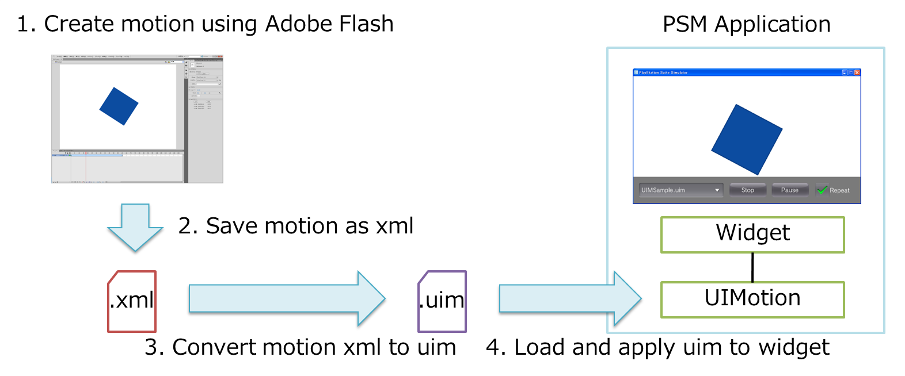

This chapter describes how to design widget animation using Adobe Flash.
The UIToolkit can apply motion created using Adobe Flash to a widget, and play back animation (set of multiple images and motion) using a special player.
As special binary formats for defining motion and animation, the uim format and uia format are provided.
The uim format is for defining motion. Use the UIMotion class to load a uim file and apply motion to a widget.
The uia format is for defining animation. Use the UIAnimationPlayer to load a uia file and play back animation.
Data created using Adobe Flash can be converted to uim and uia files using the AnimationConverter tool included in the PSM SDK.
This section describes how to use motion data (Figure 1).
Figure 1 Procedure for Using Motion Data
Create motion using Adobe Flash.
Save motion as a motion preset file (*.xml).
2-1. Select the motion to save, right-click > [Save as motion preset].
2-2. Enter the preset name and select [OK].
2-3. Add checkmark to [Window] > [Motion preset].
2-4. Select preset to save from the motion preset window, right-click > [Write out].
2-5. Enter the xml name and [Save].
Convert to a uim file using the AnimationConverter tool.
Use the following command and convert the xml file saved in step 2. to a uim file.
cd %SCE_PSM_SDK%/tools/AnimationConverter/ AnimationConverter.exe <XML file path>The options that can be used upon converting to a uim file using the AnimationConverter tool are shown in Table 1.
Table 1 Options That Can Be Used Upon Converting to uim Options
Description
-o, --output-filename
Specifies the output filename. If there is no specification, the extension of the input filename will be converted to *.uim, and this will be used as the output filename.
--help
Displays the help information.
--version
Displays the version information.
Use the UIMotion class to load the uim file created in step 3. and add motion to a widget.
The following is a sample code using the UIMotion class to read the uim file and applying motion to a button.
Button button = new Button(); button.SetPosition(100.0f, 100.0f); scene.RootWidget.AddChildLast(button); UIMotion.CreateAndStart(button, "/Application/sample.uim");
This section describes how to use animation data (Figure 2).

Figure 2 Procedure for Using Animation Data
Create animation using Adobe Flash.
Save the created animation in the xfl format.
2-1. Select [File] > [Save as].
2-2. Select the file type (either [Flash CS5.5 Uncompressed Document (*.xfl)] or [Flash CS5 Uncompressed Document (*.xfl)]) and then select [Save].
Convert to a uia file using the AnimationConverter tool.
Use the following command and convert the xfl file saved in step 2. to a uia file.
cd %SCE_PSM_SDK%/tools/AnimationConverter/ AnimationConverter.exe <XFL file path>The options that can be used upon converting to a uia file using the AnimationConverter tool are shown in Table 2.
Table 2 Options That Can Be Used Upon Converting to uia Options
Description
-o, --output-filename
Specifies the output filename. If there is no specification, the extension of the input filename will be converted to *.uia, and this will be used as the output filename.
-c, --config
Specifies the configuration file.
--create-config
Creates the default configuration file (default.config). If this option is specified, all other options are ignored.
--help
Displays the help information.
--version
Displays the version information.
The AnimationConverter can be used to control whether or not to loop the animation in Adobe Flash movie clip units.
To control loop action, prepare a configuration file as follows and specify it upon converting to a uia file.
_root,loop=off sampleA,loop=on sampleB,loop=off sampleC,loop=onThe configuration file should be written in the csv format, with the movie clip name in the first field and loop on/off in the 2nd field.
If there is no specification for a loop, loop will be set by default.
If "_root" is specified as the movie clip name, you can specify whether to loop play back the entire animation or not.
Use the UIAnimationPlayer class to load the uia file created in step 3. and play back animation.
The following is a sample code for reading the uia file using the UIAnimationPlayer class and playing back animation.
UIAnimationPlayer uiaPlayer = new UIAnimationPlayer("/Application/sample.uia"); uiaPlayer.SetPosition(100.0f, 100.0f); scene.RootWidget.AddChildLast(uiaPlayer); uiaPlayer.Play();
- The AnimationConverter tool only currently supports data created using Adobe Flash CS5 or later.
- Only Adobe Flash artwork (bmp, jpeg, png, gif) and motion tween are supported. Classic tween, shaped tween, frame animation, vector graphics, text, sound, video, ActionScript, etc., are not supported.
- Properties that can be used with motion tween are basic motion (x, y, z, rotation x, rotation y, rotation z), transformation (expansion/reduction x, expansion/reduction y), and color effects (alpha) only. Slant transformation, filter, etc., are not supported.
- The animation easing curve may not be completely reproduced at this time. In addition, custom easing curves are not supported.
- Multiple scenes are not supported.